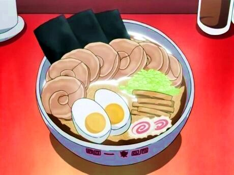

Ramen - Naruto
When I was big into Naruto, those hot steaming bowls of ramen seemed like the absolute perfect meal. However, back then, I didn’t understand the difference between those, and what came out of Top Ramen packets. Now, I’m still using the Top Ramen noodles, but I’ve added a lot more traditional ramen elements. And even if the noodles and stock aren’t 110% authentic, it’s still delicious. Believe it!
(If you’re really looking for a from-scratch-as-traditional-as-you-can-get, I’m planning on making up that recipe a bit later. Be forewarned, it’s a bit time consuming)
Ingredients:
- 2 Packages of Top Ramen
- About 5 cups of pork or beef broth (You can use the stuff in a box, the stuff in a can, or the cubes or the paste)
- Pork tenderloin
- 2 Eggs
- 1 Baby bok choy
- 1 Green onion
- Soy sauce
- Optional:
- Aburage - that’s those brown sticks on the right side of the bowl, it’s a type of soy product that’s used when you make inari-zushi. It’s some of my favorite stuff, and you should be able to find it at an Asian food store.
- Nori - I forgot to put this is mine, but it’s those black/green sheets sticking out of the back. You’d probably be able to find this at any grocery store with an Asian foods section
- amaboko - This is that white thing with the pink swirl. Its made of a sort of fish paste that is steamed into like a cake. I know it’s kind of distintive in the Naruto ramen, but I didn’t have time to go and grab some from an Asian food store (which is where you’d have to get it).
Instructions:
Marinate the tenderloin for at least 3 hours. You can use just soy sauce, or a mixure of whatever other Asian sauces you want. Teriyaki would be good, as would some mirin.
Preheat your oven to 450, then cook the tenderloin for 12-15 minutes, or until cooked all the way through.
Put your eggs in a pot with enough water to cover them. Bring to a boil and cover with a lid. It should take about 10 minutes to hard boil the eggs. Then pull them out and put them into a bowl of cold water to cool.
While this is happening, pour or mix the stock/broth in a pot and bring it to a simmer. You can add soy sauce or mirin to taste.
Once simmering, add the Top Ramen noodles. Do NOT add in the flavor packets. Let that cook.
Now, we cut up all the toppings! Peel the eggs and slice them in half, cut the pork, kamaboko, bok choy, aburage, and green onion into thin slices.
Serve up the noodles and broth in a nice deep bowl, then place all the ingredients in groups on top, and add in a few small rectangles of nori. Itadakimasu!